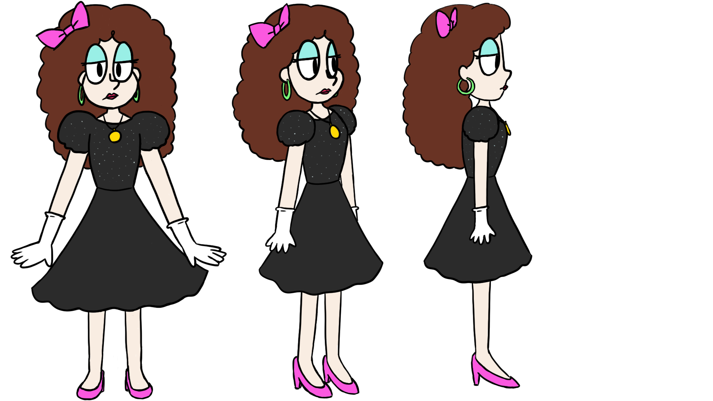

In this assignment, an imaginary client asked us to create preproduction designs for an adaptation of Lydia Conklin's short shory "A Nice Number," which is about a mother who mistakenly ends up with 500 chickens. In addition, we had to design them using a randomly assigned art style: Op Art, Pop Art, 1980s style, Surrealism, Minimalism, or Gothic. I was given 1980s style.
I was sort of familiar with what the style of the 80s was like, but I wanted to make sure I knew exactly what elements that made up that style. As I started researching, pinpointing what to take from the 80s felt a bit harder than it needed to. The 1980s was a whole decade's worth of material, and I wasn't sure what direction to take.
The styles that come to mind when I first think of the 80s are the bright and neon colors, the colorful shapes of the Memphis design, and the retrofuturistic kind of look. These were the main things I included on the mood board. Then we have other elements such as hairstyles, fashion trends, music, and cartoons that also help define that decade. While I didn't add these to the mood board, I did end up looking into these areas as a way to better understand the 80s. I probably did more research than needed for an aesthetic that's kind of back in style nowadays, but it ended up helping to influence some of the final designs.
For the assignment, we didn't have to storyboard the whole story. We could just storyboard a section of it. I chose to do the part where the triplets first appear up to the part where Agatha goes back into her house counting her money. I felt like this section explained enough of the story without feeling like storyboard was cut off.
Since the art style was the 80s, I tried to use the style of 80s cartoons to help inform how the characters would look. Some of the shows had a more realistic cartoon style, and so I attempted to draw that way, as seen in one of the Agatha sketches. However, I don’t work well with drawing realistic faces and tend to draw on the more cartoony side. I ended up sticking with my own drawing style since it still fit the cartoon style and it was easier for me to do. Next, it was deciding what each character would look like.
When thinking about how to design each character, I tried to see what information about them was given in the story. There wasn’t much on what they looked like exactly, especially for Emily. That left it up to me to decide how the 80s style could be used to influence their designs in a meaningful way.
Character Summary: Agatha shows up “all business with a tight frown” asking Emily if she wants any chickens. She sneakily gives Emily 500 chickens the next morning, despite Emily having only agreed to “maybe three.” She is later described as “wearing a black evening gown with an ornamental necklace and white gloves” in her house, which is “now strangely well furnished.” Her last name is Helms, which seems appropriate given that she has more control and dominance over Emily in the situation regarding the 500 unwanted chickens.
Part of her outfit is described in the story, but I needed to make it feel more like the 80s. I decided to make her black evening gown into more of a party dress with puffy sleeves and sparkles. I tried to bring more neon colors into her design with accessories, such as a hair bow and hoop earrings, and bright eyeshadow. And since it was the 80s, I gave her big curly hair.
I decided to do the character model sheet for Agatha because she was the first character I figured out the design for. I did sketches of the character positions first so that I would get an idea of what the actual thing should look like. Afterward, I drew over the sketches and colored them in.

Character Summary: Emily agrees to get a few chickens from Agatha to be neighborly, but she unexpectedly finds 500 chickens in her yard the next morning. She spends hours counting them and thinking about yesterday’s conversation before deciding to tell Agatha that she gave her too many chickens. When Agatha’s chicken order records show the number 500 next to Emily’s name, Emily feels that there’s nothing she can do but pay for the chickens and “[resign] herself to a life of ceaseless pecking.”
The story mentions nothing about her physical appearance, and so I decided to build her design off of what I can infer about her personality. She seems to be careful, unassuming, and somewhat timid. She isn’t outspoken or confident, and she’d rather live with the 500 chickens than stand up to Agatha. Based off of this, she appears to contrast with Agatha’s personality.
Because Agatha’s design showcases the flashy, colorful part of the 80s and Agatha herself is confident, I decided to connect how confident a character is to how much they fit in the 80s style. Emily had attempted to stand up for herself, but she ended up giving in to Agatha. And so, in her design, I would show her trying to fit in with the flashy part of the 80s and not quite achieving it.
When choosing her outfit, I looked up fashion worn by women in the 1980s and went with a regular, everyday kind of outfit by giving her a dress shirt and long skirt. As for her hair, I tried out several hairstyles, but the final one was mostly influenced by the hairstyle of the girl in the music video for a-ha’s “Take On Me.”
I included a Memphis shape design on her shirt to further show that she was trying to be part of the 80s style. For the colors, I chose pastel instead of neon for Emily’s design because they were softer and stood out less, which suited Emily’s personality better.
Character Summary: Emily’s young triplet daughters briefly appear and comment on the chickens before going back inside the house to play. They all wear “matching purple party dresses,” and one of them has pigtails.
With the details given, it wasn’t too difficult to decide how to design the triplets. One of them had pigtails, and so I thought that the other two should have different hairstyles (a ponytail and untied hair) in order to distinguish between all of them. As for the party dresses, I was considering whether or not I should put Memphis shape patterns on them to make it fit the 80s style. In the end, I decided not to because it didn’t really seem to work for the design. Not all clothing needs to have shapes to show that it’s the 80s, and since the shapes on Emily’s shirt were supposed to signify that she’s trying to fit in with the livelier part of the 80s, excluding them from the triplets’ clothing helps further show how alone Emily is in this situation.
When it came to the design of the chickens, there were a few things I had to consider. One involved how cartoony the chickens should look. After sketching out several chicken designs, I figured that it was best to keep the chicken’s shape more realistic since they should be recognizable right away. Another thing was whether to have dot eyes or oval eyes that did include the whites of the eye. I ended up choosing oval eyes because the human characters had them, which helps the chickens feel part of the same universe, and because they make it easier to show where the character is looking.
I wondered about how the 80s could be used in the chickens’ design. Having neon-colored chickens didn’t seem right, and so instead, I tried to replicate a sort of Memphis shape pattern in how the naturally colored chickens were arranged. I wasn’t sure if the Memphis design pattern came across in my final style frame, but I felt that having an assorted field of various colored chickens made the design more interesting than just having a field of white chickens.